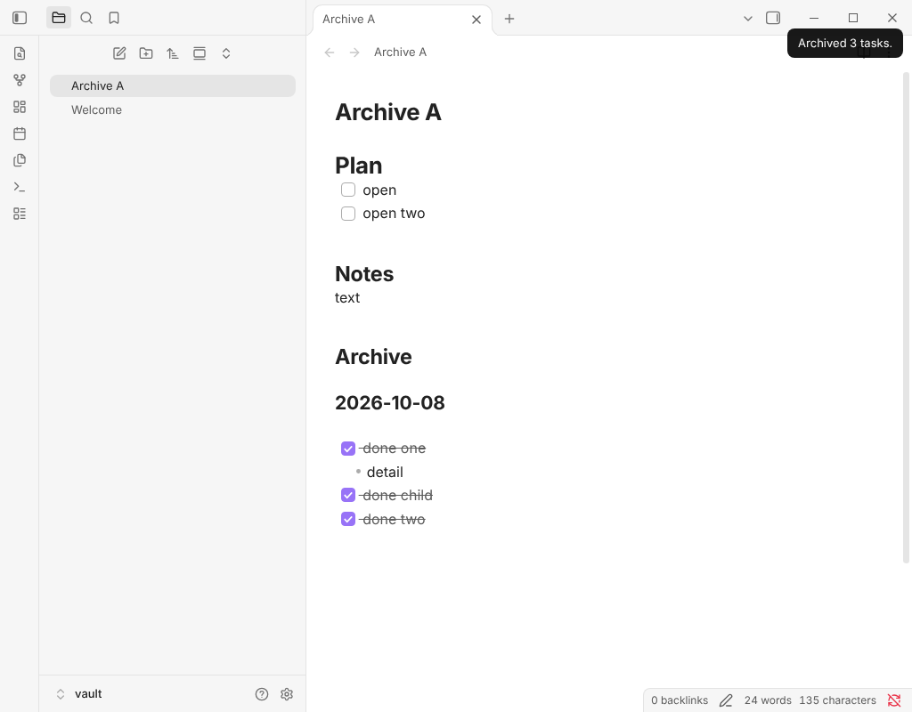

Free Obsidian plugin
Task Archive
Moves completed tasks, with their sub-items, into an archive section or note.
Install from the Obsidian directory Open in Obsidian Source code and issues

What it does
Moves completed tasks, with their sub-items, into an archive section or note.
Highlights
- Nested lines go with their task. A finished task takes its sub-bullets and sub-tasks with it. A finished sub-task of an open task moves alone, to the top level (turn that off in settings to leave it until its parent is done).
- Grouped by date. Tasks go under a smaller heading with today's date, and archiving again the same day adds to the same group.
- Archive in the note or in another one. Give a path such as
Archive/Tasks.mdand the tasks go there instead, under the same heading. The note and its folder are created when missing. Undo in the source note does not undo what was written to the archive note. - Leaves code and properties alone. A
- [x]inside a code block or the front matter is not a task. - Custom checkboxes. Choose which characters count as finished (
xXby default; add-to archive cancelled tasks too). - Safe order. With an archive note, the tasks are written there first and removed from the source second. If the source changed in between, nothing is removed and you are told.
Details
- Version
- 0.1.0
- Needs Obsidian
- 1.4.4 or newer
- Platforms
- Desktop and mobile
- Author
- Siulved54
- Price
- Free and open source